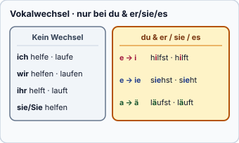
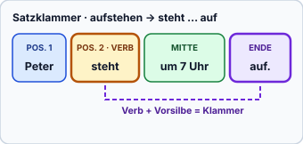

Medienübersicht
Alle Bilder, Audios und Videos dieser App mit ihrer Quelle und ihrer Lizenz.
Bilder

images/verb-endings-cards.svg© CC0-1.0Verwendet auf: Regelmäßige Verben im Präsens

images/stem-change-spotlight.svg© CC0-1.0Verwendet auf: Verben mit Vokalwechsel

images/sentence-cards-v2.svg© CC0-1.0Verwendet auf: Verb-Zweitstellung im Hauptsatz

images/sentence-cards-questions.svg© CC0-1.0Verwendet auf: W-Fragen stellen und beantworten

images/sentence-cards-bracket.svg© CC0-1.0Verwendet auf: Trennbare Verben und die Satzklammer

images/sentence-cards-aduso.svg© CC0-1.0Verwendet auf: Position-0-Konjunktionen (ADUSO)